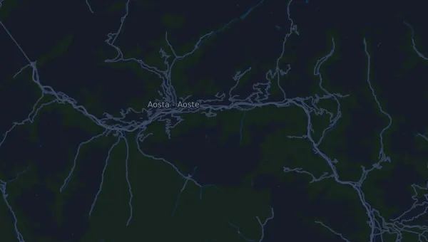

TOR330 - Tor des Géants 328 km
- Distanz
- 328 km
- Höhenmeter
- ↑ 26.816 m
- Höchster Punkt
- 3.298 m ü. M.
- Untergrund
- Trail und Gelände
- Profil
- Bergig
- Start
- 10:00 Uhr
Höhenprofil
Mit Mila vorbereiten
Mila ist eine Lauf-Coach-App. Nimmst du einen Lauf in deinen Plan auf, plant der Coach deine Wochen bis zum Start nach deiner Form und gibt dir eine Zielzeitprognose und einen Plan für Tempo, Getränke und Verpflegung auf der Strecke.

Der richtige Lauf am richtigen Tag.
Die Strecke

Über die Strecke
TOR330 - Tor des Géants ist ein Traillauf in Courmayeur, Italien, über 328 km. Die Strecke hat insgesamt 26.816 Höhenmeter bergauf und 26.815 bergab, 82 m pro km, und ist damit bergig. Der höchste Punkt liegt auf 3.298 m ü. M., der tiefste auf 314 m.
Der größte Anstieg beginnt bei km 201,2: 1.374 Höhenmeter auf 6,4 km mit durchschnittlich 21,5 % Steigung, bis auf 2.783 m. Insgesamt hat die Strecke 60 Anstiege ab 25 Höhenmetern; der letzte beginnt bei km 201,2.
In der Mila-App beschreibt der Coach die Strecke ausführlich in deiner Sprache und plant dein Pacing und deine Verpflegung dafür.
Anstiege
| Beginnt bei | Länge | Höhenmeter | Steigung | Gipfel (m ü. M.) |
|---|---|---|---|---|
| km 1,5 | 1,1 km | 101 m | 9,3 % | 1.281 |
| km 2,6 | 6 km | 1.298 m | 21,8 % | 2.572 |
| km 17,7 | 2,8 km | 78 m | 2,8 % | 1.525 |
| km 20,5 | 860 m | 102 m | 11,9 % | 1.625 |
| km 21,9 | 540 m | 63 m | 11,6 % | 1.677 |
| km 22,5 | 2,3 km | 487 m | 21,5 % | 2.155 |
| km 24,9 | 1,7 km | 354 m | 20,7 % | 2.501 |
| km 27,1 | 710 m | 41 m | 5,8 % | 2.512 |
| km 27,8 | 1,8 km | 352 m | 19,1 % | 2.860 |
| km 32,5 | 2,2 km | 699 m | 32,2 % | 2.828 |
| km 42,0 | 1 km | 57 m | 5,5 % | 1.574 |
| km 43,2 | 1,3 km | 42 m | 3,3 % | 1.584 |
| km 44,5 | 2,4 km | 124 m | 5,2 % | 1.697 |
| km 47,4 | 2,1 km | 417 m | 19,9 % | 2.077 |
| km 49,6 | 860 m | 77 m | 8,9 % | 2.143 |
| km 50,5 | 710 m | 91 m | 12,9 % | 2.232 |
| km 51,2 | 1,4 km | 159 m | 11,3 % | 2.384 |
| km 52,8 | 3,2 km | 474 m | 14,8 % | 2.845 |
| km 59,5 | 6,3 km | 1.310 m | 20,8 % | 3.010 |
| km 75,7 | 3,5 km | 525 m | 14,9 % | 2.179 |
| km 79,3 | 630 m | 71 m | 11,4 % | 2.243 |
| km 80,0 | 580 m | 60 m | 10,3 % | 2.294 |
| km 80,7 | 950 m | 73 m | 7,7 % | 2.356 |
| km 81,7 | 1,9 km | 252 m | 13,6 % | 2.601 |
| km 83,6 | 3,9 km | 705 m | 18,1 % | 3.298 |
| km 100,8 | 310 m | 42 m | 13,6 % | 1.567 |
| km 101,1 | 980 m | 34 m | 3,5 % | 1.588 |
| km 102,5 | 3 km | 241 m | 8,0 % | 1.828 |
| km 105,5 | 1,9 km | 176 m | 9,1 % | 1.998 |
| km 107,6 | 1,2 km | 156 m | 12,9 % | 2.145 |
Vor dem Start
Startzeiten
- 10:00 Uhr
Quelle: torxtrail.com, abgerufen am 15. Oktober 2026
Häufige Fragen
Wann findet TOR330 - Tor des Géants 328 km statt?
TOR330 - Tor des Géants 328 km findet am Sonntag, 12. September 2027 statt (vorläufiges Datum). Prüfe Datum und Startzeit beim Veranstalter.
Wann ist der Start bei TOR330 - Tor des Géants 328 km?
Laut Veranstalter: 10:00 Uhr.
Wie lang ist TOR330 - Tor des Géants 328 km und wie viele Höhenmeter hat die Strecke?
Der Lauf ist 328 km lang mit 26.816 Höhenmetern bergauf und 26.815 bergab. Der höchste Punkt liegt auf 3.298 m ü. M.
Wie ist die Strecke von TOR330 - Tor des Géants 328 km?
Die Strecke ist bergig, mit durchschnittlich 82 Höhenmetern pro km. Sie hat 60 Anstiege ab 25 Höhenmetern; der größte beginnt bei km 201,2: 1.374 Höhenmeter auf 6,4 km. Sie führt vom Start zu einem Ziel an einem anderen Ort. Der Untergrund ist Trail und Gelände.
Wie teile ich mir TOR330 - Tor des Géants 328 km ein?
Lauf eher mit gleichmäßiger Anstrengung als mit gleichmäßigem Tempo: Lass das Tempo an den Anstiegen sinken, hol es zurück, wo es flacher wird, und halte dich auf den ersten Kilometern zurück. Die größten Anstiege beginnen bei km 2,6, km 59,5, km 156,3 und km 201,2. In Mila bekommst du einen Pace-Plan für genau diese Strecke, passend zu deiner Form.
Ähnliche Läufe
Weitere Läufe in der Nähe
- DoloMyths Run SkyRace (22 km)11. Juli 2027 · Canazei, Italien
- Wizz Air Milano Marathon 42,2 km4. April 2027 · Milano, Italien
- Chianti Ultra Trail by UTMB – Ultra Trail Chianti Castles (UTCC 120K)20. März 2027 · Radda in Chianti, Italien
- Run Rome The Marathon 42,2 km14. März 2027 · Roma, Italien
- RomaOstia Half Marathon 21 km28. Februar 2027 · Roma, Italien
- Campaccio Cross Country 10 km6. Januar 2027 · San Giorgio su Legnano, Italien
Mit Mila vorbereiten
Der richtige Lauf am richtigen Tag.
Die Angaben stammen aus der Streckendatei und den Informationen des Veranstalters. Prüfe Datum, Startzeiten und Regeln beim Veranstalter.
Mila ist nicht mit dem Veranstalter oder den Sponsoren des Laufs verbunden und wird von ihnen weder gesponsert noch empfohlen. Namen und Marken gehören ihren Inhabern. Veranstalter oder Rechteinhaber? Änderung oder Entfernung beantragen